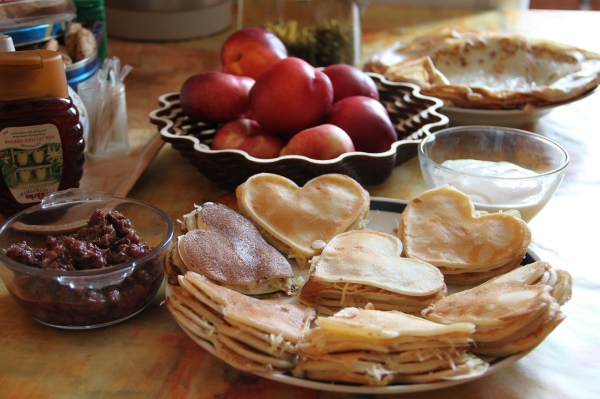

The Ultimate Breakfast

Are you hungry? I am really hungry? if so, we recommmend you pick this dish! Fluffy pancakes, eggs over easy, crispy bacon, refried beans, a heapin' mountain of fried potatoes, and an omlette with green and red bell peppers. Comes with a side of tomato and avocado (bleh).
Bacon and Eggs

You can't go wrong with the classics. Two eggs served over easy and two slices of crispy bacon.
Plain and simple Eggs

looking for something filled with protein? Two eggs, served any way you like.
The Pancake Feast
Talk about a carb overload! Seven stacks of mini pancakes shaped like hearts. Comes with a side of maple syrup and butter.
To go back to the home page, click here.
Are you interested in catering or ordering to go? if so, click here.